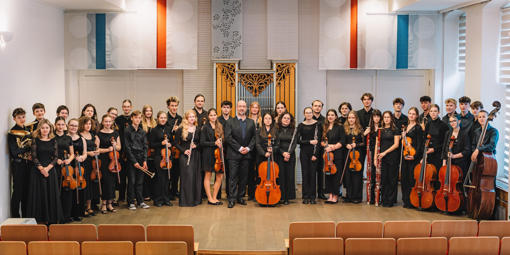
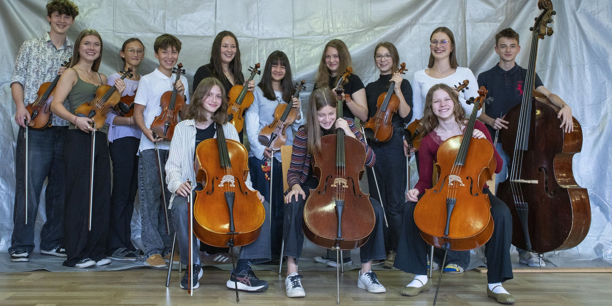
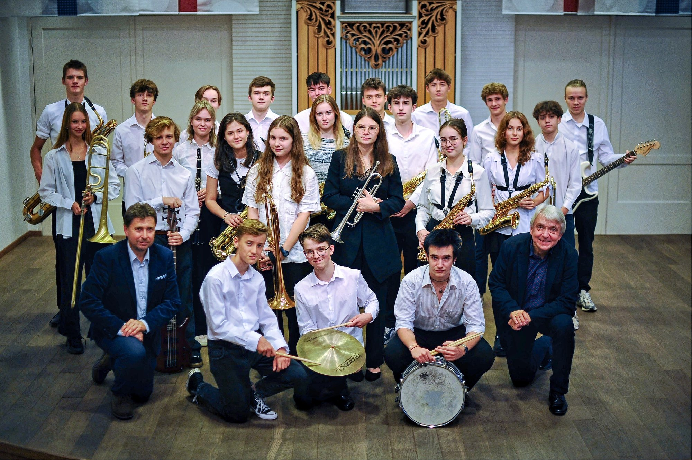
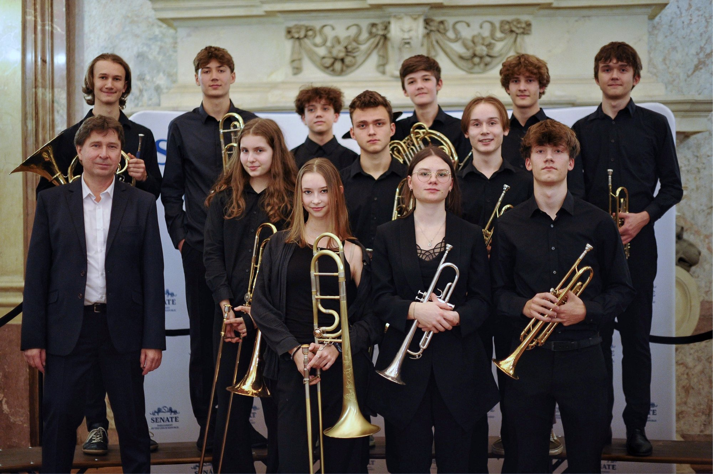
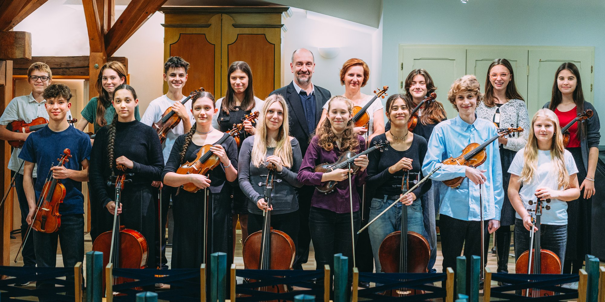
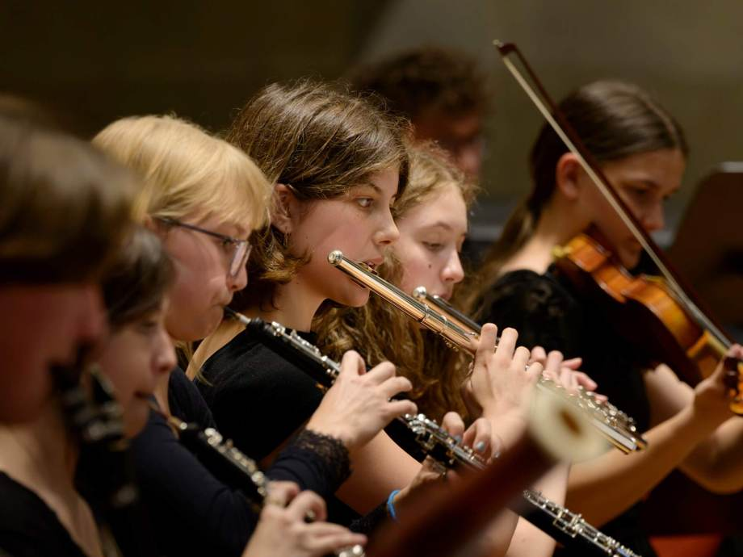

hlavního města Prahy Bakaláři
Orchestry a soubory
Symfonický orchestr GMHS
Symfonický orchestr Gymnázia a Hudební školy hl. m. Prahy je složen z vybraných studentů GMHS. Většina z nich se chce v budoucnosti věnovat profesionální dráze hudebníka. O tom, že se jim to často daří na špičkové úrovni, svědčí mj. to, že řada absolventů školy, kteří prošli Symfonickým orchestrem GMHS, jsou členy České filharmonie, Symfonického orchestru hlavního města Prahy FOK, Symfonického orchestru Českého rozhlasu či prestižních evropských orchestrů, mj. Wienner Filharmoniker, Gewandhaus orchester Liepzig, a dalších. Pódiová zkušenost, kterou mj. i díky Symfonickému orchestru GMHS získávají, vede k tomu, že se mnozí z jeho členů později stávají také vyhledávanými sólisty i členy komorních těles.
Orchestr pravidelně zkouší a vystupuje nejen na pražských pódiích (Rudolfinum, Obecní dům, Kostel sv. Šimona a Judy, Sál Martinů HAMU, apod.), v České republice, ale i v zahraničí, kam téměř každoročně zavítá. V každé koncertní sezóně se s orchestrem představí i některý předních českých dirigentů a výjimkou není ani spolupráce s pěveckými sbory a významnými českými sólisty.
Symfonický orchestr GMHS byl několikrát pozván na mezinárodní hudební festival EUROCHESTRIES do Francie. Pravidelně a úspěšně reprezentuje Hlavní město Prahu ve Spojených Arabských Emirátech (Dubaj, Abú Dhabí, Sarjah), kde pravidelně koncertuje v rámci velkého hudebního festivalu pořádaného Abú Dhabí. Cennou zkušeností zde byl samostatný koncert v rámci hlavního koncertní přehlídky pořádané OSN na hlavní stage EXPO v Dubaji v roce 2021 i o dva roky později v rámci Celosvětové klimatické konference tamtéž. V roce české hudby (2024) zde orchestr provedl Dvořákovu symfonii č. 9 e moll, op. 95 „Z nového Světa“.
Několik let orchestr spolupracuje se studenty Lineckého hudebního gymnázia Adalberta Stiftera v rámci projektu Erasmus + za podpory Evropské unie. Společné koncerty v Pražském Rudolfinu a Brucknerhausu v Linci mají skvělé ohlasy a rozvíjí vzájemné mezinárodní vztahy mezi studenty.
Repertoár orchestru je rozsáhlý. Vedle světové orchestrální literatury (mj. C. Franck – Symfonie d moll, A. Dvořák – Symfonie č. 6, 8 a 9, F. Mendelssohn-Bartholdy – Hebridy, R. Schubert Symfonie č. 8 „Nedokončená“, W. A. Mozart – Koncertantní symfonie Es dur, G. F. Händel – Vodní hudba, J. Haydn Symfonie 104 G dur „Londýnská“ ad.) studuje i méně uváděná díla českých skladatelů, zaměřuje se také na tematické dramaturgické projekty. Od koncertní sezóny 2025/2026 je dirigentem a uměleckým vedoucím orchestru prof. Petr Jiříkovský.

Lux Iuvenes Praga
Popisek v přípravě.

BigBand Plus
Jazzový orchestr Gymnázia a Hudební školy hl. m. Prahy, vznikl ve školním roce 2008/2009 jako soubor, ve kterém se studenti seznamují s jiným než klasickým hudebním žánrem. Je složený ze studentů obou škol. Od počátku vede těleso Michal Reiser spolu s Romanem Fojtíčkem.
Soubor je zaměřen nejen na interpretaci velkokapelového jazzu od „zlaté éry“ swingu po moderní kompozice (např. Take the A Train, How High the Moon, Birdland, Chicken apod.), ale funguje také jako malá dílna, kde si studenti zkoušejí své improvizace a někteří i své kompozice. Pro potřeby generační obměny hráčů vznikla ve školním roce 2010/2011 bigbandová přípravka – BENDÍK. Zde se studenti učí základům jazzového frázování v různých stylech, základům improvizace, intonace a souhry.
BigBand veřejně vystoupuje na různých společenských akcích, plesech či festivalech. Několikrát samostatně vystupoval na maturitním plese GJN v pražské Lucerně. Zúčastnil se také mezinárodní Big bandové soutěže v České Kamenici, či festivalu JazzFest v Chebu. Orchestr hraje k tanci i k poslechu. Mladému publiku přibližuje jazzovou a populární hudbu na svých výchovných koncertech.
V poslední době se pokouší rozvinout spolupráci s několika mladými, nadějnými zpěváky a je otevřen i nově příchozím hračům, instrumentalistům, kteří se zajímají nebo již hrají tento žánr. Dirigentem je prof. Michal Reiser a uměleckým vedoucím prof. Roman Fojtíček.
Zkoušky BigBandu PLUS se konají v orchestrální zkušebně školy vždy ve čtvrtek 18.00–20.00 hod.
Kontakt: M. Reiser — tel. +420 608 178 020, michalreiser@centrum.cz

Collegium Instrumentale
Soubor Collegium Instrumentale vzniknul na GMHŠ z popudu prof. Pavla Tylšara v roce 2007 jako platforma, na které se budou hráči na dechové nástroje připravovat na hru v symfonickém orchestru. Repertoár totiž kopíruje obsazení dechů v orchestru „beethovenského typu“. Soubor, byť byl logicky obměňován kvůli odchodům absolventů, si brzy osvojil široký repertoár a začal se prosazovat do povědomí hudební veřejnosti. Mezi největší úspěchy se řadí několikanásobná účast ve finále rozhlasové soutěže Concerto Bohemia před kamerami ČT a titul absolutního vítěze této soutěže v roce 2010. Pravidelně vystupoval na koncertech v sále B. Martinů na pražské HAMU, třikrát vystoupil ve Dvořákově síni Rudolfina. V současné době často koncertuje v Zrcadlové síni Klementina nebo na festivalu v zahradě kostela Nanebevzetí Panny Marie řádu Maltézských rytířů. Specifický byl koncert v cyklu kytaristy L. Brabce ve Španělské synagoze, kde zazněl Koncert pro violoncello a dechový orchestr F. Guldy ve spolupráci s vynikajícím violoncellistou ČF Ivanem Vokáčem. Ze zahraničních vystoupení jmenujme alespoň sérii koncertů v Rakousku či vystoupení v Českém kulturním centru v New Yorku.

Žesťový soubor GMHS
Žesťový soubor GMHS vznikl na Gymnáziu a Hudební škole hlavního města Prahy v roce 2012. Jeho prvotní účel, potřeba výuky souborové hry nástrojů stejného druhu, brzy přerostl v emancipaci souboru a jeho pestrou a bohatou koncertní a uměleckou činnost. Za dobu své činnosti účinkoval soubor na řadě prestižních a slavnostních akcí (mj. v Senátu ČR, v Poslanecké sněmovně, na Magistrátu hl. m. Prahy, z koncertních prostor jmenujme např. Kostel sv. Šimona a Judy, Betlémskou kapli, Zrcadlovou kapli v pražském Klementinu, z projektů jmenujme např. projekt s Židovskou obcí a Památníkem ticha v pražských Bubnech ad.).
Velikost a obsazení orchestru se mění podle toho, kolik studentů hrající na žesťové nástroje právě na škole studuje. Většinou se jedná o studenty vyššího gymnázia. Repertoár souboru je velmi široký. Skládá se nejen ze skladeb určených přímo žesťovým nástrojům, ale také z transkripcí a úprav, na kterých studenti poznávají pestrou paletu hudby. Od založení souboru je jeho uměleckým vedoucím prof. Imrich Somoš a dirigentem prof. Michal Reiser, který některé skladby pro soubor také upravuje.

Komorní orchestr Hudební školy
Komorní orchestr Hudební školy vznikl v září 2025. Tvoří ho žákyně a žáci hudební školy. Soustřeďuje se na hudbu období baroka – romantismu, věnuje se ale také tvorbě současné. Jeho uměleckou vedoucí je Daniela Oerterová, dirigentem orchestru je Petr Jiříkovský.

Bendík
Soubor Bendík je součástí velkého BigBandu PLUS, který působí již řadu let na Gymnáziu a Hudební škole hlavního města Prahy (GMHS). Po začátcích v hudbě klasické na hudební škole se hráči Bendíku postupně začínají seznamovat i s hudbou jiných žánrů, jako je např. jazz, blues, latin. Získávají zkušenosti prostřednictvím různých aranžmá taneční a jazzové hudby, aby se poté mohli zařadit do řad velkého BigBandu PLUS. Neodmyslitelnou součástí jsou také první zkušenosti s jazzovou improvizací a se hrou a frázováním v jednotlivých nástrojových sekcích. Soubor Bendík je pod vedením profesora Romana Fojtíčka a BigBand PLUS vede profesor Michal Reiser.

Malý Špalíček
Folklorní soubor Malý Špalíček vznikl ve školním roce 2015/2016 při Gymnáziu a Hudební škole hl. m. Prahy. Soubor navštěvují žáci a studenti obou škol, ve věku od 5–16 let, které spojuje zájem o uchovávání a živou interpretaci českého folklórního dědictví.
Uměleckou vedoucí souboru je Diana Nováková, která se dlouhodobě věnuje stylové interpretaci českých lidových písní a jejich pedagogickému zprostředkování mladé generaci. Navazuje tím na odkaz prof. Hany Metelkové, která ji k tomuto žánru přivedla a dlouhodobě jako její žákyně a později i kolegyně společně spolupracovaly. Repertoár Malého Špalíčku se opírá o písňové bohatství různých českých regionů – například Chodska, Plzeňska, jihozápadních Čech či Polabí. Studenti hrají, zpívají a doprovázejí se na tradiční akustické nástroje, jako jsou housle, viola, flétny, violoncella či kontrabas. Důraz je kladen na přirozený hudební projev, cit pro rytmus, intonaci a souhru.
Soubor pravidelně vystupuje na školních i veřejných akcích, např. na ZUŠ OPEN, v rámci Pražského jara 2016 vystoupil veřejně na Pražském hradě, na adventních a jarních koncertech nebo na akcích pořádaných městskými částmi. Zkoušky souboru probíhají každou středu od 15.15 do 16.25 v koncertním sále školy.
